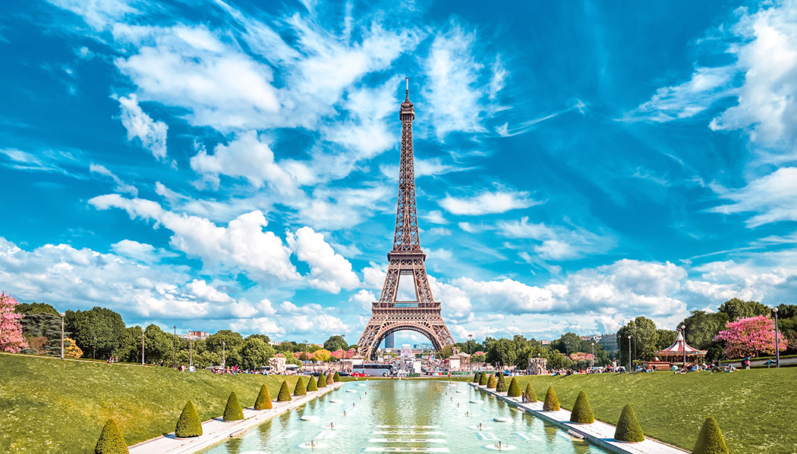

Paris, a capital da França, é uma importante cidade europeia e um centro mundial de arte, moda, gastronomia e cultura.
Sua paisagem urbana do século XIX é cortada por avenidas largas e pelo rio Sena. A cidade é conhecida por monumentos como a Torre Eiffel e a Catedral de
Notre-Dame, uma construção gótica do século XII, sendo famosa também pela cultura
dos cafés e por lojas de estilistas famosos na Rue du Faubourg Saint-Honoré.
Torre Eifel

Torre Eiffel é uma torre de treliça de ferro forjado no Champ de Mars, em Paris, França. Tem o nome do engenheiro Gustave Eiffel, cuja empresa projetou e
construiu a torre.
Big Ben
Big Ben é o nome de um grande sino instalado na torre noroeste do Palácio de Westminster, a sede do Parlamento Britânico, localizado em Londres, no Reino
Unido.
Coliseu

Coliseu
Coliseu, também conhecido como Anfiteatro Flaviano, é um anfiteatro oval localizado no centro da cidade de Roma, capital da Itália. Construído com tijolos
revestidos de argamassa e areia, e originalmente cobertos com travertino é o maior anfiteatro já construído e está situado a leste do Fórum Romano.